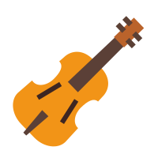

YOUR POCKET STRING STUDIO
把大提琴，装进口袋。
点击指板试听真实采样，或写下一段旋律，让练习清晰可见。
- 4
- 根琴弦
- 34
- 真实采样
- 13
- 每弦音符
FINGERBOARD
四弦指板
悬停查找同音 · 点击发声
练习提示 同音会在不同琴弦上同时高亮。使用耳机获得更好的聆听体验；按空格播放或停止，按 Esc 停止。

Pocket Cello 随时随地，练习每一个音YOUR POCKET STRING STUDIO
点击指板试听真实采样，或写下一段旋律，让练习清晰可见。
FINGERBOARD
悬停查找同音 · 点击发声
练习提示 同音会在不同琴弦上同时高亮。使用耳机获得更好的聆听体验；按空格播放或停止，按 Esc 停止。